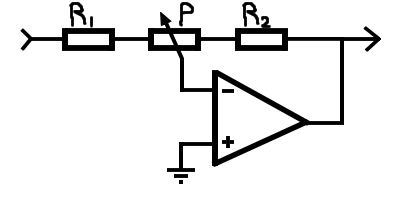

Inverter, pot on both sides
Inverter, pot on left side
Inverter, pot on right side
Non-Inverter, pot on both sides
Non-Inverter, pot on left side
Non-Inverter, pot on right side
G min
G
G max
R1
P
R2
Get closest
E6
E12
E24
E48
E96
E192
serie
